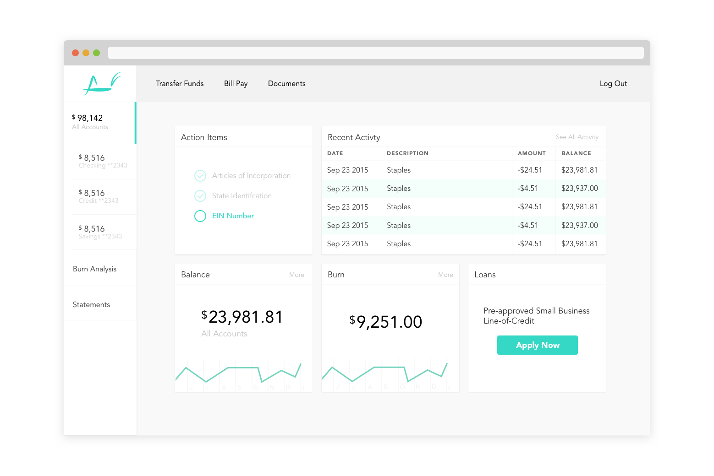
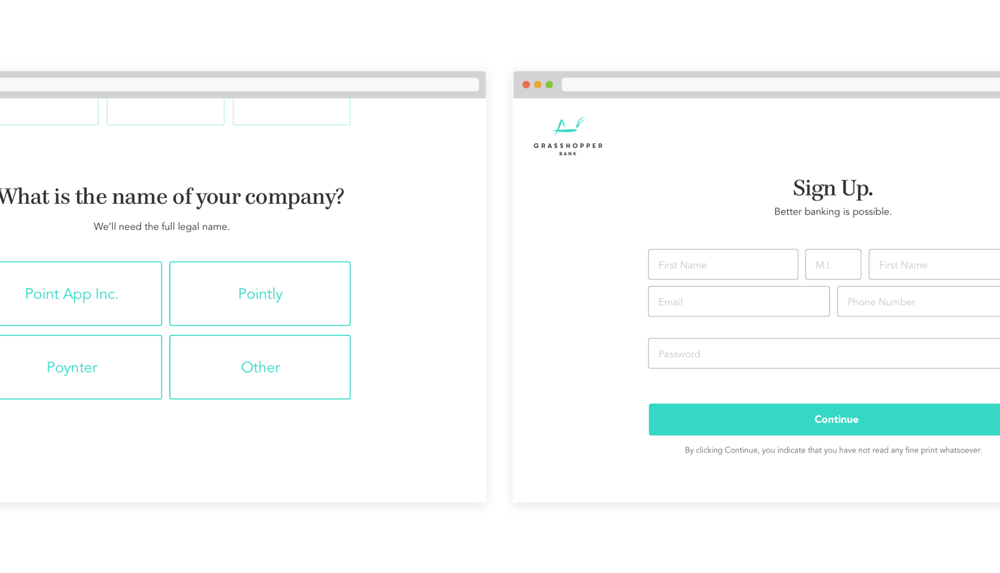
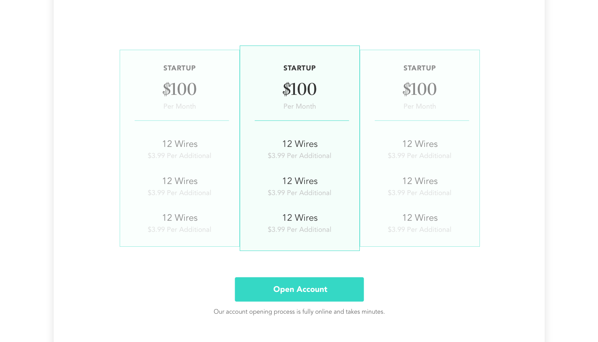
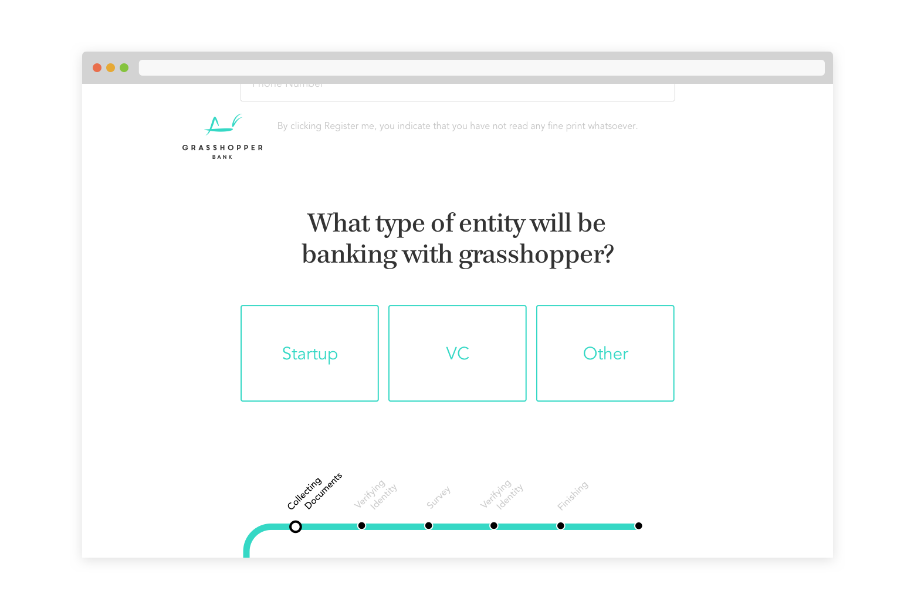
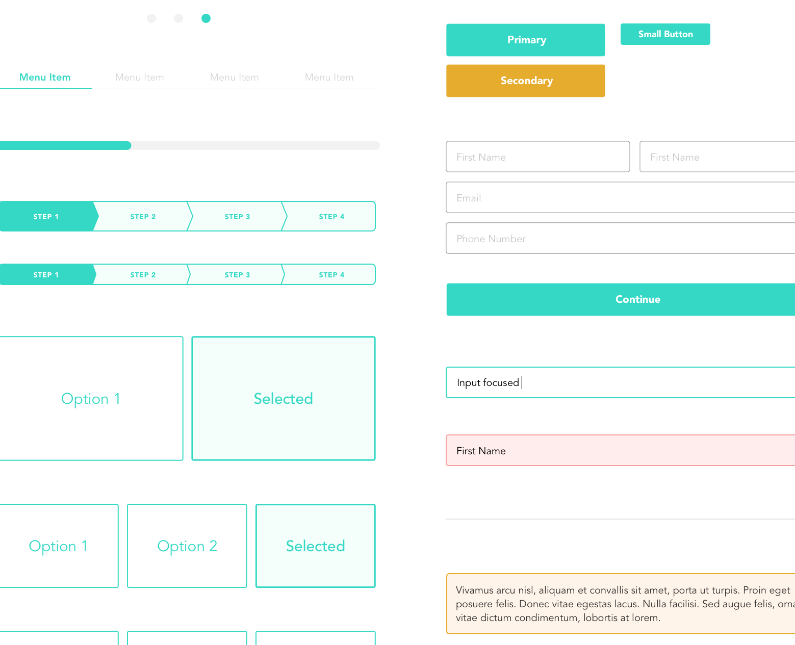
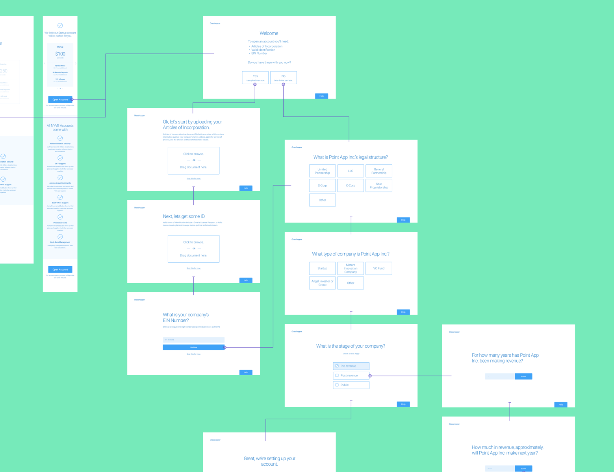
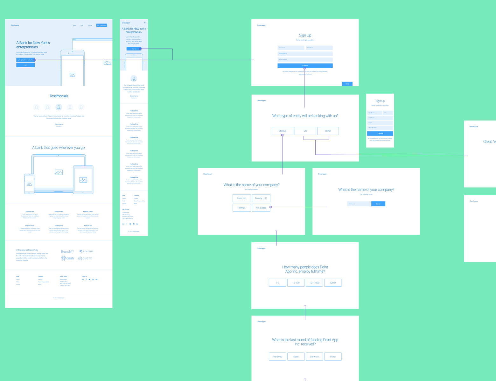

Grasshopper is a new business bank for the tech community. I was tasked with designing their top-of-the-funnel web pages, account opening process, and translating their brand into a full visual language, including interface and infographic elements.